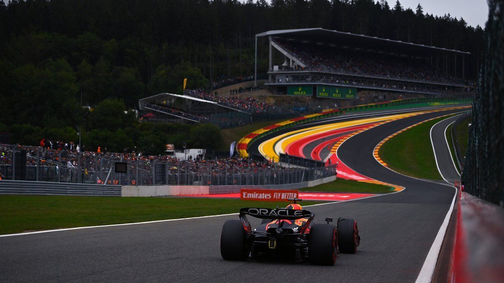

Mi piloto favorito
Mi piloto favorito es Charles Leclerc .
Forma parte del Equipo Ferrari.

La Fórmula 1 es el campeonato de automovilismo más prestigioso del mundo. Cada temporada los mejores pilotos del planeta compiten en circuitos de más de 20 países.
Mi piloto favorito es Charles Leclerc .
Forma parte del Equipo Ferrari.
Mi circuito favorito es Spa-Francorchamps, es el
circuito más famoso de la Fórmula 1 además de la famosa curva
Eau Rouge.
Tiene una inclinación de 17° y los pilotos la toman
a más de 300 km/h.

Visita Spa-Francorchamps para visualizar mas acerca del circuito Spa-Francorchamps.
La temporada 2025 termino con Lando Norris como campeón mundial de la Fórmula 1 por delante de Max Verstappen quien termino solo 2 puntos por debajo.
| Pos | Piloto | Equipo | Puntos | Nacionalidad | Victorias |
|---|---|---|---|---|---|
| 1 | Lando Norris | McLaren | 368 | GB Británico | 7 |
| 2 | Max Verstappen | Red Bull | 366 | NL Neerlandés | 8 |
| 3 | Oscar Piastri | McLaren | 314 | AU Australiano | 7 |
| 4 | Charles Leclerc | Ferrari | 242 | MC Monegasco | 0 |
| 5 | George Russell | Mercedes | 245 | GB Británico | 2 |
| POS. | TEAM | PTS. |
|---|---|---|
| 1 | McLaren | 833 |
| 2 | Mercedes | 469 |
| 3 | Red Bull | 451 |
| 🏆 McLaren — Campeón de Constructores 2025 | ||

Si te gustaría saber más acerca de la Fórmula 1 ¡Escríbeme!
Me llamo Noah y vivo en Puebla,México.
Estoy aprendiendo programación desde cero y me apasiona la
Fórmula 1
Decidí aprender a programar porque quiero dedicarme a esto. Llevo 4 sesiones estudiando HTML.
Estas son algunas cosas que me gustan
Me gusta aprender cosas nuevas saber y crear cualquier cosa.
Quiero construir una aplicacion web y ser experto en el mundo de programación moderna